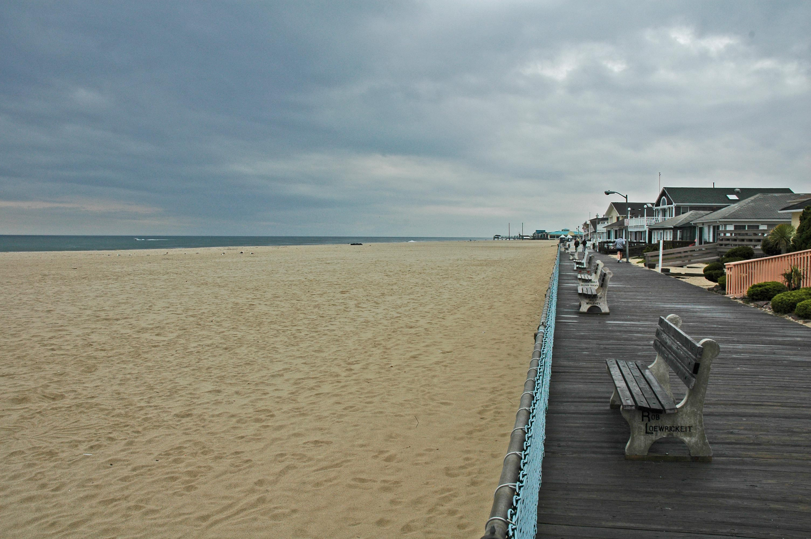
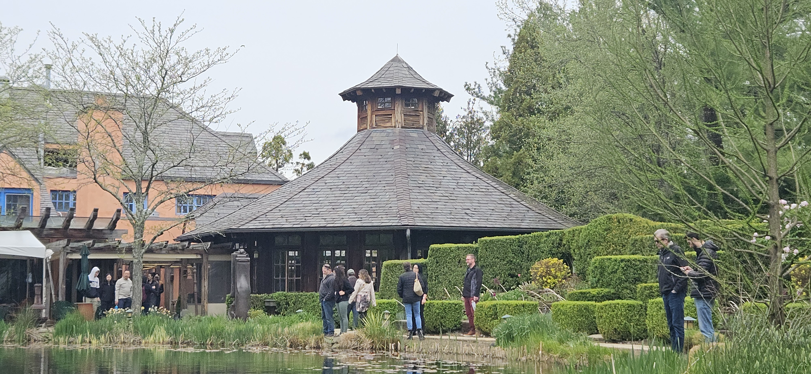
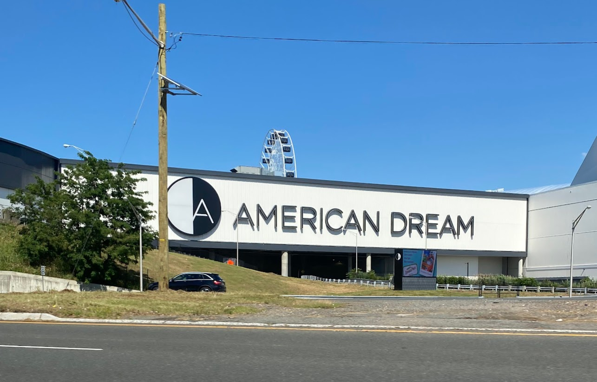

<!DOCTYPE html>
<html>
<head>
    
    <meta http-equiv="content-type" content="text/html; charset=UTF-8" />
    <script src="https://cdn.jsdelivr.net/npm/leaflet@1.9.3/dist/leaflet.js"></script>
    <script src="https://code.jquery.com/jquery-3.7.1.min.js"></script>
    <script src="https://cdn.jsdelivr.net/npm/bootstrap@5.2.2/dist/js/bootstrap.bundle.min.js"></script>
    <script src="https://cdnjs.cloudflare.com/ajax/libs/Leaflet.awesome-markers/2.0.2/leaflet.awesome-markers.js"></script>
    <link rel="stylesheet" href="https://cdn.jsdelivr.net/npm/leaflet@1.9.3/dist/leaflet.css"/>
    <link rel="stylesheet" href="https://cdn.jsdelivr.net/npm/bootstrap@5.2.2/dist/css/bootstrap.min.css"/>
    <link rel="stylesheet" href="https://netdna.bootstrapcdn.com/bootstrap/3.0.0/css/bootstrap-glyphicons.css"/>
    <link rel="stylesheet" href="https://cdn.jsdelivr.net/npm/@fortawesome/fontawesome-free@6.2.0/css/all.min.css"/>
    <link rel="stylesheet" href="https://cdnjs.cloudflare.com/ajax/libs/Leaflet.awesome-markers/2.0.2/leaflet.awesome-markers.css"/>
    <link rel="stylesheet" href="https://cdn.jsdelivr.net/gh/python-visualization/folium/folium/templates/leaflet.awesome.rotate.min.css"/>
    
            <meta name="viewport" content="width=device-width,
                initial-scale=1.0, maximum-scale=1.0, user-scalable=no" />
            <style>
                #map_8da55144a1c22a13516308cc6f8576a1 {
                    position: relative;
                    width: 100.0%;
                    height: 100.0%;
                    left: 0.0%;
                    top: 0.0%;
                }
                .leaflet-container { font-size: 1rem; }
            </style>

            <style>html, body {
                width: 100%;
                height: 100%;
                margin: 0;
                padding: 0;
            }
            </style>

            <style>#map {
                position:absolute;
                top:0;
                bottom:0;
                right:0;
                left:0;
                }
            </style>

            <style>
                .map-legend {
                    background: rgba(255, 255, 255, 0.95);
                    border-radius: 10px;
                    box-shadow: 0 4px 14px rgba(0, 0, 0, 0.18);
                    color: #2c3e50;
                    line-height: 1.4;
                    padding: 12px 14px;
                }
                .map-legend h4 {
                    font-size: 15px;
                    font-weight: 700;
                    margin: 0 0 8px 0;
                }
                .map-legend .legend-item {
                    align-items: center;
                    display: flex;
                    font-size: 13px;
                    margin-bottom: 6px;
                }
                .map-legend .legend-item:last-child {
                    margin-bottom: 0;
                }
                .map-legend .legend-swatch {
                    border: 2px solid rgba(255, 255, 255, 0.9);
                    border-radius: 50%;
                    box-shadow: 0 0 0 1px rgba(0, 0, 0, 0.2);
                    display: inline-block;
                    height: 14px;
                    margin-right: 8px;
                    width: 14px;
                }
            </style>

            <script>
                L_NO_TOUCH = false;
                L_DISABLE_3D = false;
            </script>

        
</head>
<body>
    
    
            <div class="folium-map" id="map_8da55144a1c22a13516308cc6f8576a1" ></div>
        
</body>
<script>
    
    
            var map_8da55144a1c22a13516308cc6f8576a1 = L.map(
                "map_8da55144a1c22a13516308cc6f8576a1",
                {
                    center: [40.2, -74.5],
                    crs: L.CRS.EPSG3857,
                    zoom: 8,
                    zoomControl: true,
                    preferCanvas: false
                }
            );

            

        
    
            var tile_layer_2c26e2953985a4cfc29d6d314f23c9b1 = L.tileLayer(
                "https://api.mapbox.com/styles/v1/gianni800/cmmclvong00cg01ry1haohbaw/tiles/256/{z}/{x}/{y}@2x?access_token=pk.eyJ1IjoiZ2lhbm5pODAwIiwiYSI6ImNtbHRvZGloZDAyZXAzZG9yeDU4NWhuZHYifQ.zgTV_NQ7QPVeommiLkqGaw",
                {
  "minZoom": 0,
  "maxZoom": 18,
  "maxNativeZoom": 18,
  "noWrap": false,
  "attribution": "Mapbox",
  "subdomains": "abc",
  "detectRetina": false,
  "tms": false,
  "opacity": 1,
}

            );
        
    
            tile_layer_2c26e2953985a4cfc29d6d314f23c9b1.addTo(map_8da55144a1c22a13516308cc6f8576a1);
        
    
            var marker_d08e428c82e246380471821d18e3a0ff = L.marker(
                [40.707147, -74.035223],
                {
}
            ).addTo(map_8da55144a1c22a13516308cc6f8576a1);
        
    
            var icon_e3ce831af2648fb3de794e8872ad5877 = L.AwesomeMarkers.icon(
                {
  "markerColor": "green",
  "iconColor": "white",
  "icon": "info-sign",
  "prefix": "glyphicon",
  "extraClasses": "fa-rotate-0",
}
            );
        
    
        var popup_9eeb636a0226cb21444d508fe0046937 = L.popup({
  "maxWidth": 350,
});

        
            
                var html_4d59ae053d45954fd356ba3671882f96 = $(`<div id="html_4d59ae053d45954fd356ba3671882f96" style="width: 100.0%; height: 100.0%;">     <div style="max-width: 320px; font-family: Arial, sans-serif;">         <h3 style="color: #2c3e50; margin: 0 0 12px 0; font-size: 18px; font-weight: bold;">Liberty State Park</h3>         <p style="margin: 0 0 15px 0; font-size: 14px; line-height: 1.5; color: #34495e;">One of the best places in New Jersey to see the Statue of Liberty and the Manhattan skyline. It's peaceful and perfect for walking along the waterfront.</p>         <div style="position: relative; margin-bottom: 12px;">                          <div style="position: absolute; bottom: 8px; right: 8px; background: rgba(0,0,0,0.7); color: white; padding: 4px 8px; border-radius: 4px; font-size: 11px;">                 📸 Real Photo             </div>         </div>         <div style="background: #ecf0f1; padding: 8px 12px; border-radius: 6px; border-left: 4px solid #3498db;">             <div style="font-size: 12px; color: #7f8c8d; margin-bottom: 4px;">📍 <strong>Address:</strong></div>             <div style="font-size: 13px; color: #2c3e50;">1 Audrey Zapp Dr, Jersey City, NJ 07305</div>         </div>         <div style="margin-top: 10px; font-size: 11px; color: #95a5a6; text-align: center; font-style: italic;">             Visit this authentic New Jersey location and experience it yourself!         </div>     </div>     </div>`)[0];
                popup_9eeb636a0226cb21444d508fe0046937.setContent(html_4d59ae053d45954fd356ba3671882f96);
            
        

        marker_d08e428c82e246380471821d18e3a0ff.bindPopup(popup_9eeb636a0226cb21444d508fe0046937)
        ;

        
    
    
                marker_d08e428c82e246380471821d18e3a0ff.setIcon(icon_e3ce831af2648fb3de794e8872ad5877);
            
    
            var marker_5136c7e225c06b4b87969aa831d6d0c9 = L.marker(
                [40.708409, -74.055272],
                {
}
            ).addTo(map_8da55144a1c22a13516308cc6f8576a1);
        
    
            var icon_ac09c876267c0c3a0b32c2dc80840cef = L.AwesomeMarkers.icon(
                {
  "markerColor": "purple",
  "iconColor": "white",
  "icon": "info-sign",
  "prefix": "glyphicon",
  "extraClasses": "fa-rotate-0",
}
            );
        
    
        var popup_e6211d3ea9981d19675c3986781d8dd7 = L.popup({
  "maxWidth": 350,
});

        
            
                var html_9b2c28c0120011e4ee1389c34d2523d9 = $(`<div id="html_9b2c28c0120011e4ee1389c34d2523d9" style="width: 100.0%; height: 100.0%;">     <div style="max-width: 320px; font-family: Arial, sans-serif;">         <h3 style="color: #2c3e50; margin: 0 0 12px 0; font-size: 18px; font-weight: bold;">Liberty Science Center</h3>         <p style="margin: 0 0 15px 0; font-size: 14px; line-height: 1.5; color: #34495e;">A huge science museum with interactive exhibits and one of the biggest planetariums in the country. It's a fun place to explore and learn.</p>         <div style="position: relative; margin-bottom: 12px;">                          <div style="position: absolute; bottom: 8px; right: 8px; background: rgba(0,0,0,0.7); color: white; padding: 4px 8px; border-radius: 4px; font-size: 11px;">                 📸 Real Photo             </div>         </div>         <div style="background: #ecf0f1; padding: 8px 12px; border-radius: 6px; border-left: 4px solid #3498db;">             <div style="font-size: 12px; color: #7f8c8d; margin-bottom: 4px;">📍 <strong>Address:</strong></div>             <div style="font-size: 13px; color: #2c3e50;">222 Jersey City Blvd, Jersey City, NJ 07305</div>         </div>         <div style="margin-top: 10px; font-size: 11px; color: #95a5a6; text-align: center; font-style: italic;">             Visit this authentic New Jersey location and experience it yourself!         </div>     </div>     </div>`)[0];
                popup_e6211d3ea9981d19675c3986781d8dd7.setContent(html_9b2c28c0120011e4ee1389c34d2523d9);
            
        

        marker_5136c7e225c06b4b87969aa831d6d0c9.bindPopup(popup_e6211d3ea9981d19675c3986781d8dd7)
        ;

        
    
    
                marker_5136c7e225c06b4b87969aa831d6d0c9.setIcon(icon_ac09c876267c0c3a0b32c2dc80840cef);
            
    
            var marker_92536d1d0317560d6fe8ce5f7abbd00d = L.marker(
                [40.342781, -74.657007],
                {
}
            ).addTo(map_8da55144a1c22a13516308cc6f8576a1);
        
    
            var icon_15095a8b6d734a5c0d3f9eb1270ab57e = L.AwesomeMarkers.icon(
                {
  "markerColor": "blue",
  "iconColor": "white",
  "icon": "info-sign",
  "prefix": "glyphicon",
  "extraClasses": "fa-rotate-0",
}
            );
        
    
        var popup_c7d8ee75d4a366b245533854e261491e = L.popup({
  "maxWidth": 350,
});

        
            
                var html_b10ef249daa64d80cca22c4864d96e66 = $(`<div id="html_b10ef249daa64d80cca22c4864d96e66" style="width: 100.0%; height: 100.0%;">     <div style="max-width: 320px; font-family: Arial, sans-serif;">         <h3 style="color: #2c3e50; margin: 0 0 12px 0; font-size: 18px; font-weight: bold;">Princeton University</h3>         <p style="margin: 0 0 15px 0; font-size: 14px; line-height: 1.5; color: #34495e;">One of the most beautiful college campuses in the country. Walking around the historic buildings and green spaces is always impressive.</p>         <div style="position: relative; margin-bottom: 12px;">                          <div style="position: absolute; bottom: 8px; right: 8px; background: rgba(0,0,0,0.7); color: white; padding: 4px 8px; border-radius: 4px; font-size: 11px;">                 📸 Real Photo             </div>         </div>         <div style="background: #ecf0f1; padding: 8px 12px; border-radius: 6px; border-left: 4px solid #3498db;">             <div style="font-size: 12px; color: #7f8c8d; margin-bottom: 4px;">📍 <strong>Address:</strong></div>             <div style="font-size: 13px; color: #2c3e50;">Princeton, NJ 08544</div>         </div>         <div style="margin-top: 10px; font-size: 11px; color: #95a5a6; text-align: center; font-style: italic;">             Visit this authentic New Jersey location and experience it yourself!         </div>     </div>     </div>`)[0];
                popup_c7d8ee75d4a366b245533854e261491e.setContent(html_b10ef249daa64d80cca22c4864d96e66);
            
        

        marker_92536d1d0317560d6fe8ce5f7abbd00d.bindPopup(popup_c7d8ee75d4a366b245533854e261491e)
        ;

        
    
    
                marker_92536d1d0317560d6fe8ce5f7abbd00d.setIcon(icon_15095a8b6d734a5c0d3f9eb1270ab57e);
            
    
            var marker_2efb5f2c80e05d9ad70388f2095d98d4 = L.marker(
                [40.145843, -74.436618],
                {
}
            ).addTo(map_8da55144a1c22a13516308cc6f8576a1);
        
    
            var icon_519452677b44fced011978d6c7eaaa07 = L.AwesomeMarkers.icon(
                {
  "markerColor": "cadetblue",
  "iconColor": "white",
  "icon": "info-sign",
  "prefix": "glyphicon",
  "extraClasses": "fa-rotate-0",
}
            );
        
    
        var popup_9a3e4caeb8a5745bd1d7a94640f7395e = L.popup({
  "maxWidth": 350,
});

        
            
                var html_a85caee9bd8bc343a3bc8f6c3993f062 = $(`<div id="html_a85caee9bd8bc343a3bc8f6c3993f062" style="width: 100.0%; height: 100.0%;">     <div style="max-width: 320px; font-family: Arial, sans-serif;">         <h3 style="color: #2c3e50; margin: 0 0 12px 0; font-size: 18px; font-weight: bold;">Six Flags Great Adventure</h3>         <p style="margin: 0 0 15px 0; font-size: 14px; line-height: 1.5; color: #34495e;">A massive amusement park known for huge roller coasters like Kingda Ka. It's one of the most exciting places to visit in New Jersey.</p>         <div style="position: relative; margin-bottom: 12px;">                          <div style="position: absolute; bottom: 8px; right: 8px; background: rgba(0,0,0,0.7); color: white; padding: 4px 8px; border-radius: 4px; font-size: 11px;">                 📸 Real Photo             </div>         </div>         <div style="background: #ecf0f1; padding: 8px 12px; border-radius: 6px; border-left: 4px solid #3498db;">             <div style="font-size: 12px; color: #7f8c8d; margin-bottom: 4px;">📍 <strong>Address:</strong></div>             <div style="font-size: 13px; color: #2c3e50;">1 Six Flags Blvd, Jackson Township, NJ 08527</div>         </div>         <div style="margin-top: 10px; font-size: 11px; color: #95a5a6; text-align: center; font-style: italic;">             Visit this authentic New Jersey location and experience it yourself!         </div>     </div>     </div>`)[0];
                popup_9a3e4caeb8a5745bd1d7a94640f7395e.setContent(html_a85caee9bd8bc343a3bc8f6c3993f062);
            
        

        marker_2efb5f2c80e05d9ad70388f2095d98d4.bindPopup(popup_9a3e4caeb8a5745bd1d7a94640f7395e)
        ;

        
    
    
                marker_2efb5f2c80e05d9ad70388f2095d98d4.setIcon(icon_519452677b44fced011978d6c7eaaa07);
            
    
            var marker_6aeb5ea293a04bff7a3e53422660bb9b = L.marker(
                [40.082876, -74.068322],
                {
}
            ).addTo(map_8da55144a1c22a13516308cc6f8576a1);
        
    
            var icon_8c6f1e1299cabedf99e359234f4985eb = L.AwesomeMarkers.icon(
                {
  "markerColor": "cadetblue",
  "iconColor": "white",
  "icon": "info-sign",
  "prefix": "glyphicon",
  "extraClasses": "fa-rotate-0",
}
            );
        
    
        var popup_96075c43883159a6826724a646d20607 = L.popup({
  "maxWidth": 350,
});

        
            
                var html_ad929ec403d0a56d3cda69be4c7a6088 = $(`<div id="html_ad929ec403d0a56d3cda69be4c7a6088" style="width: 100.0%; height: 100.0%;">     <div style="max-width: 320px; font-family: Arial, sans-serif;">         <h3 style="color: #2c3e50; margin: 0 0 12px 0; font-size: 18px; font-weight: bold;">Point Pleasant Beach</h3>         <p style="margin: 0 0 15px 0; font-size: 14px; line-height: 1.5; color: #34495e;">A classic Jersey Shore beach with a boardwalk, rides, and great ocean views. It's a perfect summer destination.</p>         <div style="position: relative; margin-bottom: 12px;">                          <div style="position: absolute; bottom: 8px; right: 8px; background: rgba(0,0,0,0.7); color: white; padding: 4px 8px; border-radius: 4px; font-size: 11px;">                 📸 Real Photo             </div>         </div>         <div style="background: #ecf0f1; padding: 8px 12px; border-radius: 6px; border-left: 4px solid #3498db;">             <div style="font-size: 12px; color: #7f8c8d; margin-bottom: 4px;">📍 <strong>Address:</strong></div>             <div style="font-size: 13px; color: #2c3e50;">Point Pleasant Beach, NJ 08742</div>         </div>         <div style="margin-top: 10px; font-size: 11px; color: #95a5a6; text-align: center; font-style: italic;">             Visit this authentic New Jersey location and experience it yourself!         </div>     </div>     </div>`)[0];
                popup_96075c43883159a6826724a646d20607.setContent(html_ad929ec403d0a56d3cda69be4c7a6088);
            
        

        marker_6aeb5ea293a04bff7a3e53422660bb9b.bindPopup(popup_96075c43883159a6826724a646d20607)
        ;

        
    
    
                marker_6aeb5ea293a04bff7a3e53422660bb9b.setIcon(icon_8c6f1e1299cabedf99e359234f4985eb);
            
    
            var marker_744ad8ee47c45c6560ed0f535858edfb = L.marker(
                [40.23704, -74.719115],
                {
}
            ).addTo(map_8da55144a1c22a13516308cc6f8576a1);
        
    
            var icon_2c65a520ff246342825ccd08ab6f2f02 = L.AwesomeMarkers.icon(
                {
  "markerColor": "purple",
  "iconColor": "white",
  "icon": "info-sign",
  "prefix": "glyphicon",
  "extraClasses": "fa-rotate-0",
}
            );
        
    
        var popup_822ba4d2e818794e0e3a654f26b4ea46 = L.popup({
  "maxWidth": 350,
});

        
            
                var html_29aaf67e2b09af4c6ab2078e8cd3b2fd = $(`<div id="html_29aaf67e2b09af4c6ab2078e8cd3b2fd" style="width: 100.0%; height: 100.0%;">     <div style="max-width: 320px; font-family: Arial, sans-serif;">         <h3 style="color: #2c3e50; margin: 0 0 12px 0; font-size: 18px; font-weight: bold;">Grounds for Sculpture</h3>         <p style="margin: 0 0 15px 0; font-size: 14px; line-height: 1.5; color: #34495e;">A huge outdoor sculpture park filled with art installations and gardens. It's a peaceful place to walk and enjoy creative artwork.</p>         <div style="position: relative; margin-bottom: 12px;">                          <div style="position: absolute; bottom: 8px; right: 8px; background: rgba(0,0,0,0.7); color: white; padding: 4px 8px; border-radius: 4px; font-size: 11px;">                 📸 Real Photo             </div>         </div>         <div style="background: #ecf0f1; padding: 8px 12px; border-radius: 6px; border-left: 4px solid #3498db;">             <div style="font-size: 12px; color: #7f8c8d; margin-bottom: 4px;">📍 <strong>Address:</strong></div>             <div style="font-size: 13px; color: #2c3e50;">80 Sculptors Way, Hamilton Township, NJ 08619</div>         </div>         <div style="margin-top: 10px; font-size: 11px; color: #95a5a6; text-align: center; font-style: italic;">             Visit this authentic New Jersey location and experience it yourself!         </div>     </div>     </div>`)[0];
                popup_822ba4d2e818794e0e3a654f26b4ea46.setContent(html_29aaf67e2b09af4c6ab2078e8cd3b2fd);
            
        

        marker_744ad8ee47c45c6560ed0f535858edfb.bindPopup(popup_822ba4d2e818794e0e3a654f26b4ea46)
        ;

        
    
    
                marker_744ad8ee47c45c6560ed0f535858edfb.setIcon(icon_2c65a520ff246342825ccd08ab6f2f02);
            
    
            var marker_a0d94119e7640ea6c976166398faab99 = L.marker(
                [40.770514, -74.173816],
                {
}
            ).addTo(map_8da55144a1c22a13516308cc6f8576a1);
        
    
            var icon_0031ac562e82c32212f9bccb08d153a6 = L.AwesomeMarkers.icon(
                {
  "markerColor": "green",
  "iconColor": "white",
  "icon": "info-sign",
  "prefix": "glyphicon",
  "extraClasses": "fa-rotate-0",
}
            );
        
    
        var popup_b5823588b283ced4ce5ed3c5d5018437 = L.popup({
  "maxWidth": 350,
});

        
            
                var html_69f7854dc077a162692857f45450cc83 = $(`<div id="html_69f7854dc077a162692857f45450cc83" style="width: 100.0%; height: 100.0%;">     <div style="max-width: 320px; font-family: Arial, sans-serif;">         <h3 style="color: #2c3e50; margin: 0 0 12px 0; font-size: 18px; font-weight: bold;">Branch Brook Park</h3>         <p style="margin: 0 0 15px 0; font-size: 14px; line-height: 1.5; color: #34495e;">Famous for having more cherry blossom trees than Washington DC. During spring the park is covered in beautiful pink flowers.</p>         <div style="position: relative; margin-bottom: 12px;">                          <div style="position: absolute; bottom: 8px; right: 8px; background: rgba(0,0,0,0.7); color: white; padding: 4px 8px; border-radius: 4px; font-size: 11px;">                 📸 Real Photo             </div>         </div>         <div style="background: #ecf0f1; padding: 8px 12px; border-radius: 6px; border-left: 4px solid #3498db;">             <div style="font-size: 12px; color: #7f8c8d; margin-bottom: 4px;">📍 <strong>Address:</strong></div>             <div style="font-size: 13px; color: #2c3e50;">Lake St, Newark, NJ 07104</div>         </div>         <div style="margin-top: 10px; font-size: 11px; color: #95a5a6; text-align: center; font-style: italic;">             Visit this authentic New Jersey location and experience it yourself!         </div>     </div>     </div>`)[0];
                popup_b5823588b283ced4ce5ed3c5d5018437.setContent(html_69f7854dc077a162692857f45450cc83);
            
        

        marker_a0d94119e7640ea6c976166398faab99.bindPopup(popup_b5823588b283ced4ce5ed3c5d5018437)
        ;

        
    
    
                marker_a0d94119e7640ea6c976166398faab99.setIcon(icon_0031ac562e82c32212f9bccb08d153a6);
            
    
            var marker_2c71867864d8f795b9de727ce68277b1 = L.marker(
                [40.808489, -74.069559],
                {
}
            ).addTo(map_8da55144a1c22a13516308cc6f8576a1);
        
    
            var icon_151c8c0e631b83283f5564da7f5b9cb1 = L.AwesomeMarkers.icon(
                {
  "markerColor": "pink",
  "iconColor": "white",
  "icon": "info-sign",
  "prefix": "glyphicon",
  "extraClasses": "fa-rotate-0",
}
            );
        
    
        var popup_10db01a4bbcc6df3ce32cde0696c04cd = L.popup({
  "maxWidth": 350,
});

        
            
                var html_f3f2537b97689a9db5f71b5c2828aa85 = $(`<div id="html_f3f2537b97689a9db5f71b5c2828aa85" style="width: 100.0%; height: 100.0%;">     <div style="max-width: 320px; font-family: Arial, sans-serif;">         <h3 style="color: #2c3e50; margin: 0 0 12px 0; font-size: 18px; font-weight: bold;">American Dream Mall</h3>         <p style="margin: 0 0 15px 0; font-size: 14px; line-height: 1.5; color: #34495e;">One of the largest malls in the United States with indoor skiing, water parks, and endless stores.</p>         <div style="position: relative; margin-bottom: 12px;">                          <div style="position: absolute; bottom: 8px; right: 8px; background: rgba(0,0,0,0.7); color: white; padding: 4px 8px; border-radius: 4px; font-size: 11px;">                 📸 Real Photo             </div>         </div>         <div style="background: #ecf0f1; padding: 8px 12px; border-radius: 6px; border-left: 4px solid #3498db;">             <div style="font-size: 12px; color: #7f8c8d; margin-bottom: 4px;">📍 <strong>Address:</strong></div>             <div style="font-size: 13px; color: #2c3e50;">1 American Dream Way, East Rutherford, NJ 07073</div>         </div>         <div style="margin-top: 10px; font-size: 11px; color: #95a5a6; text-align: center; font-style: italic;">             Visit this authentic New Jersey location and experience it yourself!         </div>     </div>     </div>`)[0];
                popup_10db01a4bbcc6df3ce32cde0696c04cd.setContent(html_f3f2537b97689a9db5f71b5c2828aa85);
            
        

        marker_2c71867864d8f795b9de727ce68277b1.bindPopup(popup_10db01a4bbcc6df3ce32cde0696c04cd)
        ;

        
    
    
                marker_2c71867864d8f795b9de727ce68277b1.setIcon(icon_151c8c0e631b83283f5564da7f5b9cb1);
            
    
            var marker_6e95255912e6ed58b43bd693bf8db094 = L.marker(
                [40.219991, -74.000905],
                {
}
            ).addTo(map_8da55144a1c22a13516308cc6f8576a1);
        
    
            var icon_e23661b214bf41ae8f01faa1c42c05ea = L.AwesomeMarkers.icon(
                {
  "markerColor": "orange",
  "iconColor": "white",
  "icon": "info-sign",
  "prefix": "glyphicon",
  "extraClasses": "fa-rotate-0",
}
            );
        
    
        var popup_05d7e5a1c278c093def2667b232eab80 = L.popup({
  "maxWidth": 350,
});

        
            
                var html_35fb1c54fef598f83ebf3824dee102f5 = $(`<div id="html_35fb1c54fef598f83ebf3824dee102f5" style="width: 100.0%; height: 100.0%;">     <div style="max-width: 320px; font-family: Arial, sans-serif;">         <h3 style="color: #2c3e50; margin: 0 0 12px 0; font-size: 18px; font-weight: bold;">The Stone Pony</h3>         <p style="margin: 0 0 15px 0; font-size: 14px; line-height: 1.5; color: #34495e;">Legendary music venue where famous artists like Bruce Springsteen performed early in their careers.</p>         <div style="position: relative; margin-bottom: 12px;">                          <div style="position: absolute; bottom: 8px; right: 8px; background: rgba(0,0,0,0.7); color: white; padding: 4px 8px; border-radius: 4px; font-size: 11px;">                 📸 Real Photo             </div>         </div>         <div style="background: #ecf0f1; padding: 8px 12px; border-radius: 6px; border-left: 4px solid #3498db;">             <div style="font-size: 12px; color: #7f8c8d; margin-bottom: 4px;">📍 <strong>Address:</strong></div>             <div style="font-size: 13px; color: #2c3e50;">913 Ocean Ave, Asbury Park, NJ 07712</div>         </div>         <div style="margin-top: 10px; font-size: 11px; color: #95a5a6; text-align: center; font-style: italic;">             Visit this authentic New Jersey location and experience it yourself!         </div>     </div>     </div>`)[0];
                popup_05d7e5a1c278c093def2667b232eab80.setContent(html_35fb1c54fef598f83ebf3824dee102f5);
            
        

        marker_6e95255912e6ed58b43bd693bf8db094.bindPopup(popup_05d7e5a1c278c093def2667b232eab80)
        ;

        
    
    
                marker_6e95255912e6ed58b43bd693bf8db094.setIcon(icon_e23661b214bf41ae8f01faa1c42c05ea);
            
    
            var marker_966cc6417b5b645f642622a69fefe5bd = L.marker(
                [40.223744, -73.998307],
                {
}
            ).addTo(map_8da55144a1c22a13516308cc6f8576a1);
        
    
            var icon_dfbbb7d67081628328cc55274b142cf8 = L.AwesomeMarkers.icon(
                {
  "markerColor": "cadetblue",
  "iconColor": "white",
  "icon": "info-sign",
  "prefix": "glyphicon",
  "extraClasses": "fa-rotate-0",
}
            );
        
    
        var popup_377f5e416d3a48b58a93bd632b66f502 = L.popup({
  "maxWidth": 350,
});

        
            
                var html_4f6c52e516f639ad69a8d0ce8da44a7a = $(`<div id="html_4f6c52e516f639ad69a8d0ce8da44a7a" style="width: 100.0%; height: 100.0%;">     <div style="max-width: 320px; font-family: Arial, sans-serif;">         <h3 style="color: #2c3e50; margin: 0 0 12px 0; font-size: 18px; font-weight: bold;">Asbury Park Boardwalk</h3>         <p style="margin: 0 0 15px 0; font-size: 14px; line-height: 1.5; color: #34495e;">A lively boardwalk with food, music, and beach views. It's one of the most iconic spots along the Jersey Shore.</p>         <div style="position: relative; margin-bottom: 12px;">                          <div style="position: absolute; bottom: 8px; right: 8px; background: rgba(0,0,0,0.7); color: white; padding: 4px 8px; border-radius: 4px; font-size: 11px;">                 📸 Real Photo             </div>         </div>         <div style="background: #ecf0f1; padding: 8px 12px; border-radius: 6px; border-left: 4px solid #3498db;">             <div style="font-size: 12px; color: #7f8c8d; margin-bottom: 4px;">📍 <strong>Address:</strong></div>             <div style="font-size: 13px; color: #2c3e50;">1300 Ocean Ave, Asbury Park, NJ 07712</div>         </div>         <div style="margin-top: 10px; font-size: 11px; color: #95a5a6; text-align: center; font-style: italic;">             Visit this authentic New Jersey location and experience it yourself!         </div>     </div>     </div>`)[0];
                popup_377f5e416d3a48b58a93bd632b66f502.setContent(html_4f6c52e516f639ad69a8d0ce8da44a7a);
            
        

        marker_966cc6417b5b645f642622a69fefe5bd.bindPopup(popup_377f5e416d3a48b58a93bd632b66f502)
        ;

        
    
    
                marker_966cc6417b5b645f642622a69fefe5bd.setIcon(icon_dfbbb7d67081628328cc55274b142cf8);

                    var legend_2416f094a1bb2a2a77fcc0de3f0aa5c3 = L.control({
                        position: "bottomright"
                    });

                    legend_2416f094a1bb2a2a77fcc0de3f0aa5c3.onAdd = function() {
                        var div = L.DomUtil.create("div", "map-legend");
                        div.innerHTML = `
                            <h4>Map Legend</h4>
                            <div class="legend-item"><span class="legend-swatch" style="background: #2ca25f;"></span>Parks and outdoor spaces</div>
                            <div class="legend-item"><span class="legend-swatch" style="background: #8e44ad;"></span>Museums and cultural spots</div>
                            <div class="legend-item"><span class="legend-swatch" style="background: #2e86de;"></span>College landmark</div>
                            <div class="legend-item"><span class="legend-swatch" style="background: #5dade2;"></span>Beach and entertainment destinations</div>
                            <div class="legend-item"><span class="legend-swatch" style="background: #ff69b4;"></span>Shopping destination</div>
                            <div class="legend-item"><span class="legend-swatch" style="background: #f39c12;"></span>Music venue</div>
                        `;
                        return div;
                    };

                    legend_2416f094a1bb2a2a77fcc0de3f0aa5c3.addTo(map_8da55144a1c22a13516308cc6f8576a1);
            
</script>
</html>